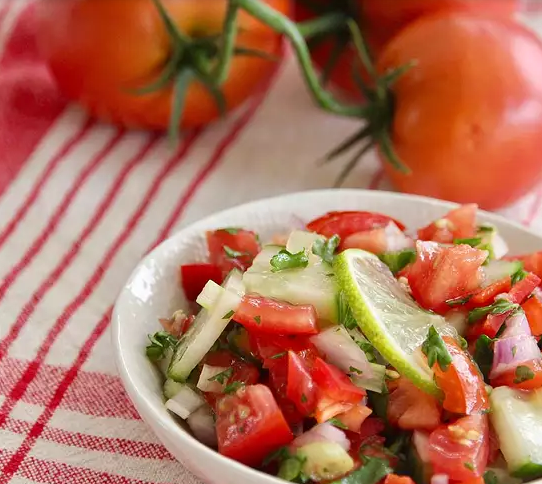

Vinagrete

This is a vinagrete ready and fresh
Just follow the next recipe steps to the letter and this is how your Vinagrete gonna be looks
Ingredients
- 5 tomatoes, diced
- ½ English cucumber, quartered and thinly sliced
- 1 red bell pepper, seeded and diced
- ½ cup diced onion>
- ½ cub finely chopped fresh parsley
- ¼ cub lime juice
- ¼ cup olive oil
- ¼ cup diced green onions
- ¼ cup finely chopped fresh cilantro
- 2 tablespoons cider vinegar
- salt and ground black pepper to taste
Steps
- Mix tomatoes, cucumber, red bell pepper, onion, parsley, lime juice, olive oil, green onions, cilantro, vinegar, salt, and pepper in a large bowl.
- Let stand at room temperature until flavors combine, about 3 hours.
- Enjoy